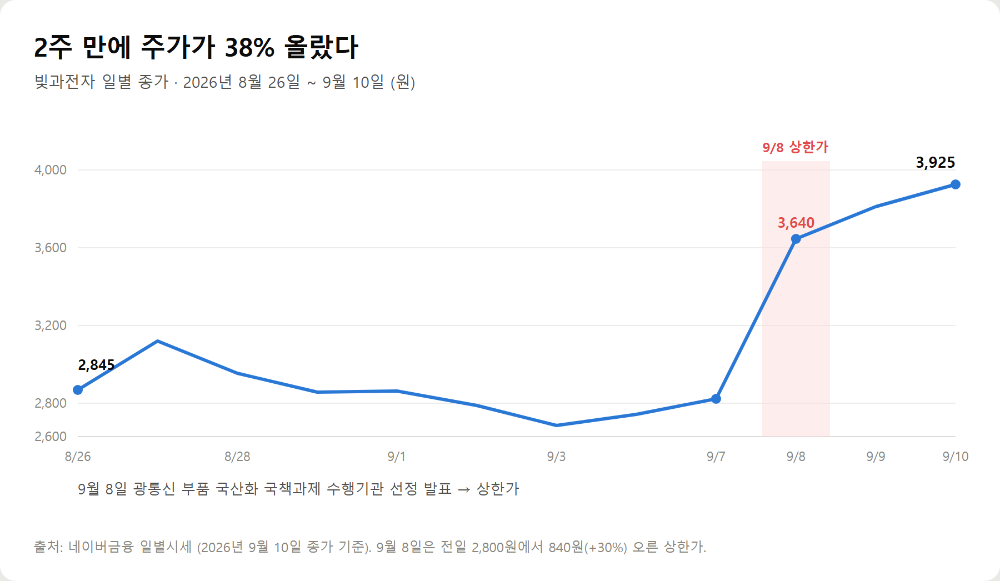
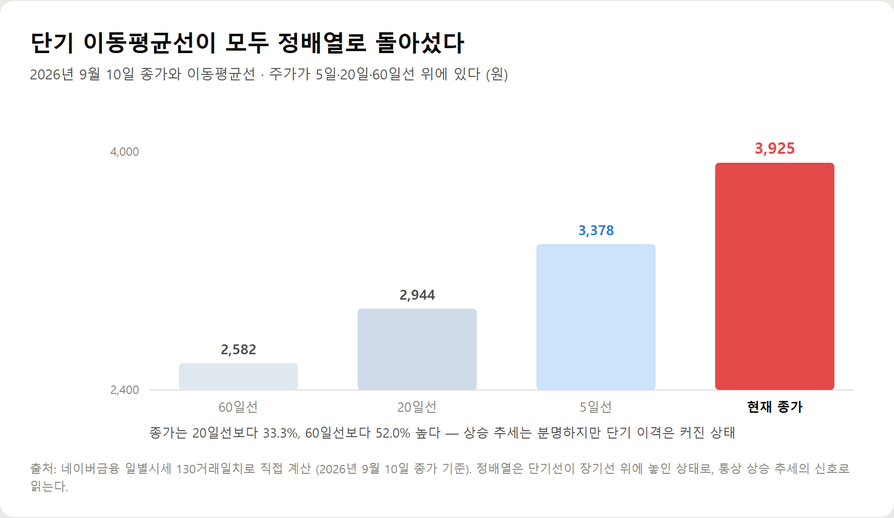
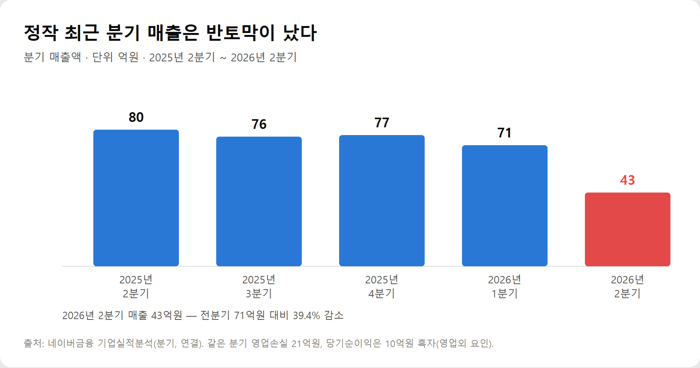
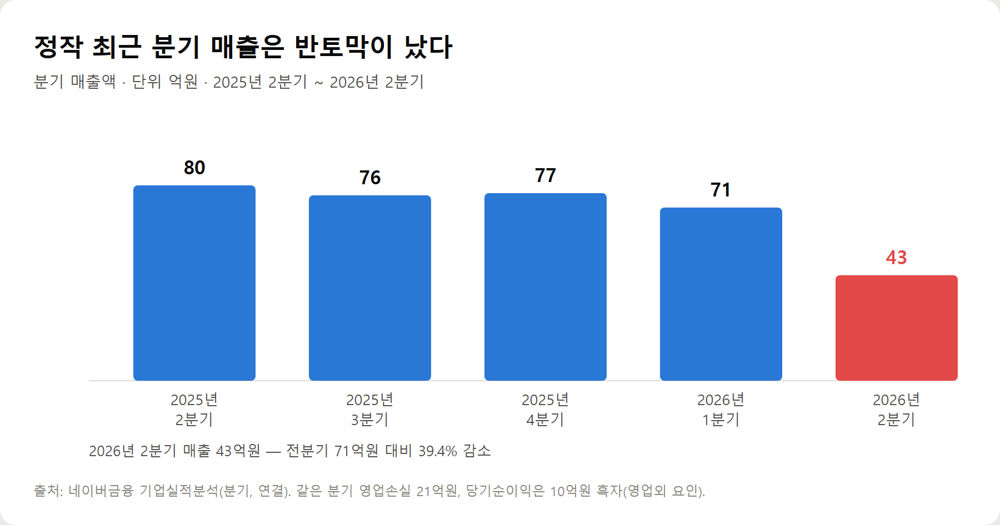

<meta charset="utf-8">
<title>빛과전자 주가, 정배열 전환 자리에서 볼 것 — 나의 투자 그리고 행복한 여행</title>
<meta name="description" content="빛과전자 주가 기술적 분석 — 2026년 9월 10일 종가 3,925원. 5일선 3,378·20일선 2,944·60일선 2,582원 정배열, 거래량 20일 평균의 3.1배. 지지·저항선 정리.">
<meta name="viewport" content="width=device-width, initial-scale=1">
<link rel="canonical" href="https://danielmoon82.github.io/moon/posts/light-electronics-2026-09.html">
<link rel="preconnect" href="https://fonts.googleapis.com">
<link rel="preconnect" href="https://fonts.gstatic.com" crossorigin>
<link rel="stylesheet" href="https://fonts.googleapis.com/css2?family=Hahmlet:wght@400;600;800&family=IBM+Plex+Mono:wght@400;500&family=IBM+Plex+Sans+KR:wght@300;400;500;600&display=swap">

<style>
  :root{
    --paper:#F2EEE6;--surface:#FAF8F3;--surface-2:#E7E1D5;
    --ink:#191510;--ink-2:#4A4235;--ink-3:#7D7364;
    --line:#D6CEBF;--line-soft:#E4DDD0;--accent:#B06A15;--accent-bright:#C2761A;
    --up:#E5484D;--down:#3B82F6;
    --f-display:"Hahmlet",'Nanum Myeongjo',"Apple SD Gothic Neo",serif;
    --f-body:"IBM Plex Sans KR","Apple SD Gothic Neo","Malgun Gothic",sans-serif;
    --f-mono:"IBM Plex Mono","SFMono-Regular",Consolas,monospace;
    --pad:clamp(20px,5vw,64px);
  }
  @media (prefers-color-scheme:dark){
    :root:not([data-theme="light"]){
      --paper:#0B1120;--surface:#121A2C;--surface-2:#1A2439;
      --ink:#E9EEF7;--ink-2:#A9B5C9;--ink-3:#72809A;
      --line:#26314A;--line-soft:#1D2739;--accent:#E8A33D;--accent-bright:#F0B45C;
    }
  }
  *{box-sizing:border-box;}
  body{margin:0;background:var(--paper);color:var(--ink);font-family:var(--f-body);
    font-weight:300;font-size:1rem;line-height:1.75;-webkit-font-smoothing:antialiased;}
  a{color:inherit;}
  img{max-width:100%;height:auto;}
  .wrap{max-width:760px;margin:0 auto;padding-inline:var(--pad);}
  .nav{position:sticky;top:0;z-index:20;background:color-mix(in srgb,var(--paper) 88%,transparent);
    backdrop-filter:saturate(180%) blur(12px);border-bottom:1px solid var(--line);}
  .nav-in{display:flex;align-items:center;justify-content:space-between;height:58px;}
  .brand{font-family:var(--f-display);font-weight:600;font-size:1rem;letter-spacing:-.02em;text-decoration:none;}
  .back{font-family:var(--f-mono);font-size:.72rem;color:var(--ink-3);text-decoration:none;}
  .article{padding-block:clamp(40px,7vw,72px) clamp(56px,9vw,96px);}
  .eyebrow{font-family:var(--f-mono);font-size:.68rem;letter-spacing:.16em;text-transform:uppercase;
    color:var(--accent);margin:0 0 14px;}
  h1{font-family:var(--f-display);font-weight:800;font-size:clamp(1.6rem,4.4vw,2.3rem);
    line-height:1.3;letter-spacing:-.03em;margin:0 0 16px;}
  .byline{font-family:var(--f-mono);font-size:.72rem;color:var(--ink-3);
    padding-bottom:24px;border-bottom:1px solid var(--line);margin-bottom:32px;}
  h2{font-family:var(--f-display);font-weight:600;font-size:1.25rem;letter-spacing:-.02em;margin:42px 0 14px;}
  h3{font-family:var(--f-display);font-weight:600;font-size:1.05rem;letter-spacing:-.02em;
    margin:30px 0 10px;padding-top:14px;border-top:1px solid var(--line-soft);}
  h3 .code{font-family:var(--f-mono);font-size:.7rem;font-weight:400;color:var(--ink-3);margin-left:6px;}
  p{margin:0 0 18px;color:var(--ink-2);}
  ul.checks{margin:0 0 18px;padding-left:20px;color:var(--ink-2);}
  ul.checks li{margin-bottom:8px;font-size:.94rem;}
  table{width:100%;border-collapse:collapse;font-size:.88rem;margin-bottom:8px;}
  th{font-family:var(--f-mono);font-size:.66rem;letter-spacing:.06em;text-transform:uppercase;
    color:var(--ink-3);text-align:right;padding:8px 6px;border-bottom:1px solid var(--line);}
  th:first-child{text-align:left;}
  td{padding:10px 6px;border-bottom:1px solid var(--line-soft);color:var(--ink-2);}
  td.num{font-family:var(--f-mono);text-align:right;font-variant-numeric:tabular-nums;}
  td.up{color:var(--up);} td.down{color:var(--down);}
  .scroll{overflow-x:auto;}
  figure{margin:22px 0;}
  figure img{display:block;border-radius:3px;background:var(--surface-2);}
  figcaption{margin-top:8px;font-family:var(--f-mono);font-size:.68rem;color:var(--ink-3);text-align:center;}
  .note{margin-top:34px;padding:16px 18px;border-left:3px solid var(--accent);
    background:var(--surface);border-radius:0 3px 3px 0;}
  .note p{margin:0;font-size:.85rem;color:var(--ink-3);}
  .foot{border-top:1px solid var(--line);background:var(--surface);padding-block:30px 38px;}
  .foot p{margin:0;font-size:.8rem;color:var(--ink-3);}
</style>

<nav class="nav">
  <div class="wrap nav-in">
    <a class="brand" href="../index.html">나의 투자 그리고 행복한 여행</a>
    <a class="back" href="../index.html#stocks">← 시황으로</a>
  </div>
</nav>

<main class="wrap article">
  <p class="eyebrow">Market</p>
  <h1>빛과전자 주가 기술적 분석 — 이동평균·거래량·지지저항 (2026-09-10)</h1>
  <p class="byline">투자 · 2026-09-10 기준</p>

  <p>한 줄 요약: 2026년 9월 10일 종가 3,925원, 시가총액 4,423억원. 5일선 3,378원·20일선 2,944원·60일선 2,582원으로 정배열. 종가는 20일선 대비 +33.3%, 60일선 대비 +52.0%. 거래량 3,861만주로 20일 평균(1,258만주)의 3.1배. 최근 20거래일 고가 4,460원·저가 2,500원. 2025년 매출 318억원(+75.7%), PBR 4.43배.</p>
  <p>이 글은 네이버금융 일별시세 130거래일치를 직접 계산한 값과, 기업실적분석·종목 뉴스에서 확인 가능한 값만 모아 정리한 기록입니다. 목표주가는 담지 않았습니다.</p>
  <h2>1. 무슨 일이 있었나 — 9월 8일 상한가</h2>
  <figure><figcaption>빛과전자 일별 종가 (2026년 8월 26일 ~ 9월 10일)</figcaption></figure>
  <p>먼저 사건의 순서입니다.</p>
  <ul class="checks">
    <li>9월 8일 — 과학기술정보통신부 주관, 한국지능정보사회진흥원 전담 '지능정보 네트워크용 광통신 부품 상용화 사업' 수행기관 선정 발표. 개장 직후 26.79%까지 오르며 종가 상한가 3,640원</li>
    <li>9월 9일 — 3,810원(+170원). 장중 고가 4,460원, 거래량 6,978만주</li>
    <li>9월 10일 — 3,925원(+115원). 장중 고가 4,250원, 거래대금 1,518억원</li>
  </ul>
  <p>과제는 한양대 ERICA 산학협력단이 주관하고 빛과전자가 참여기관으로 수행합니다. AI 데이터센터와 6G 네트워크 확산에 대응하는 차세대 프론트홀용 광통신 부품의 국산화가 목표입니다.</p>
  <p>국책과제 참여는 기술력에 대한 공적 인정이라는 의미가 있습니다. 다만 이건 수주 계약이 아니라 연구개발 과제이므로, 매출로 잡히는 시점은 상용화 이후가 됩니다. 차트를 볼 때 이 구분을 염두에 두면 좋습니다.</p>
  <h2>2. 이동평균선 — 정배열로 돌아섰다</h2>
  <figure><figcaption>2026년 9월 10일 종가와 이동평균선</figcaption></figure>
  <p>130거래일 시세로 직접 계산한 이동평균선입니다.</p>
  <ul class="checks">
    <li>5일선 — 3,378원 (종가 대비 +16.2%)</li>
    <li>20일선 — 2,944원 (종가 대비 +33.3%)</li>
    <li>60일선 — 2,582원 (종가 대비 +52.0%)</li>
    <li>120일선 — 3,541원 (종가 대비 +10.8%)</li>
  </ul>
  <p>**주가 &gt; 5일선 &gt; 20일선 &gt; 60일선.** 단기·중기 이동평균이 순서대로 놓인 정배열입니다. 교과서적으로는 상승 추세가 살아 있는 구간으로 읽습니다.</p>
  <p>여기에 하나 더 눈여겨볼 게 있습니다. 종가 3,925원이 120일선 3,541원까지 넘어섰다는 점입니다. 120일선은 6월 고점(한때 6,900원대) 구간이 포함돼 높게 형성돼 있었는데, 이걸 회복했다는 건 여름 조정 구간의 매물을 소화했다는 뜻입니다.</p>
  <div class="note"><p>정배열의 의미는 '오를 것'이 아니라 '추세가 아래로 꺾이지 않았다'입니다. 방향은 확인됐고, 남은 문제는 속도입니다. 20일선 대비 +33%는 단기 이격이 벌어진 상태라, 눌림이 나오는 게 오히려 자연스럽습니다.</p></div>
  <h2>3. 거래량 — 상승에 손이 실렸다</h2>
  <figure><figcaption>일별 거래량 (2026년 8월 26일 ~ 9월 10일)</figcaption></figure>
  <ul class="checks">
    <li>9월 8일 — 4,182만주 (상한가)</li>
    <li>9월 9일 — 6,979만주 (구간 최대)</li>
    <li>9월 10일 — 3,861만주</li>
    <li>20일 평균 — 1,258만주 / 60일 평균 1,221만주</li>
  </ul>
  <p>9월 10일 거래량은 20일 평균의 3.1배입니다. 그 전 9월 1일~4일 구간은 하루 200만~380만주 수준이었으니, 거래가 완전히 다른 국면으로 바뀐 겁니다.</p>
  <p>거래량이 실린 상승이 중요한 이유는 **그 가격대에 실제로 손이 바뀌었기 때문**입니다. 새로 매수한 사람들의 평균 단가가 그 구간에 쌓이고, 나중에 주가가 그 자리로 되돌아오면 매수 대기가 붙습니다. 거래량 없이 뜬 자리는 이런 지지가 생기지 않습니다.</p>
  <p>다만 9월 9일 6,979만주는 상장주식수 1억 1,269만주의 62%에 해당하는 규모입니다. 하루에 유통주식 상당 부분이 손바뀜했다는 건 그만큼 단기 차익 실현 물량도 함께 들어왔다는 뜻으로 봅니다.</p>
  <h2>4. 지지선과 저항선 — 어디를 보면 되나</h2>
  <p>차트에서 확인 가능한 가격대를 정리하면 이렇습니다.</p>
  <p>**저항선**</p>
  <ul class="checks">
    <li>1차 4,250~4,460원 — 9월 9일·10일 장중 고가. 최근 20거래일 최고가는 4,460원</li>
    <li>2차 6,900원대 — 2026년 6월 기록한 전고점</li>
    <li>최종 8,100원 — 52주 최고가</li>
  </ul>
  <p>**지지선**</p>
  <ul class="checks">
    <li>1차 3,640원 — 9월 8일 상한가 종가. 거래량이 실린 자리</li>
    <li>2차 2,944원 — 20일선. 이 선을 지키면 추세는 유지되는 것으로 본다</li>
    <li>3차 2,582원 — 60일선. 여기까지 밀리면 상승 구간 전체를 되돌린 셈</li>
  </ul>
  <p>실전에서 쓰기 좋은 기준선은 **20일선 2,944원**입니다. 정배열 상태에서 20일선을 종가로 이탈하지 않는 동안은 추세가 살아 있다고 보고, 이탈하면 흐름이 바뀌었다고 판단하는 방식입니다. 단순하지만 급등주에서 실수를 줄여줍니다.</p>
  <p>반대로 4,460원을 거래량과 함께 넘어서면 다음 목표는 6월 고점 구간이 됩니다. 그 사이에는 뚜렷한 매물대가 없습니다.</p>
  <div class="note"><p>급등한 종목을 볼 때는 '얼마까지 오를까'보다 '어디까지 밀리면 내 판단이 틀린 것인가'를 먼저 정하는 편이 낫습니다. 이 종목이라면 20일선이 그 자리입니다.</p></div>
  <h2>5. 실적과 밸류에이션 — 차트가 앞서가는 구간</h2>
  <figure><figcaption>분기 매출액 추이 (단위: 억원)</figcaption></figure>
  <p>기술적으로 좋은 신호가 나와 있는 것과, 실적이 그걸 뒷받침하는 것은 별개입니다. 숫자를 그대로 보겠습니다.</p>
  <ul class="checks">
    <li>2025년 매출 318억원 — 전년 181억원 대비 75.7% 증가</li>
    <li>2025년 영업손익 -165억원 — 3년 연속 영업손실</li>
    <li>2026년 2분기 매출 43억원 — 전분기 71억원 대비 감소</li>
    <li>2026년 2분기 당기순이익 +10억원 — 분기 기준 흑자 전환</li>
    <li>부채비율 24.44% — 2025년 말 57.30%에서 개선</li>
    <li>PBR 4.43배 (BPS 887원), PER 산출 불가</li>
  </ul>
  <p>긍정적으로 읽을 수 있는 항목이 두 개 있습니다. 연간 매출이 75.7% 늘었다는 것, 그리고 2026년 2분기에 당기순이익이 흑자로 돌아섰다는 것입니다. 부채비율도 24%대로 낮아져 재무 부담은 크지 않습니다.</p>
  <p>반대로 확인이 필요한 항목도 분명합니다. 영업 단계에서는 여전히 손실이고, 2분기 매출이 43억원으로 내려왔습니다. 국책과제와 AI 인프라 수요가 실제 주문으로 이어지는지가 다음 분기 실적에서 확인될 부분입니다.</p>
  <p>PBR 4.43배는 실적 기준으로는 싸지 않습니다. 다만 성장 전환기에 있는 부품 기업에 시장이 붙이는 프리미엄으로 보면 설명이 되는 수준이기도 합니다. 이 값이 정당해지는 조건은 하나입니다 — 분기 매출이 다시 올라오는 것.</p>
  <h2>6. 향후 전망 — 시나리오별로</h2>
  <p>**상승 시나리오.** 4,460원을 거래량과 함께 돌파하는 경우입니다. 이 위로는 6월 고점 구간까지 뚜렷한 매물대가 없어 상승 여력이 열립니다. 조건은 두 가지입니다. AI 데이터센터·6G 관련 뉴스 흐름이 이어지는 것, 그리고 다음 분기 매출이 70억원대를 회복하는 것. 산업 방향 자체는 다투기 어려운 국면이라 이 시나리오의 가능성은 충분히 열려 있다고 봅니다.</p>
  <p>**횡보 시나리오.** 3,640원~4,460원 사이에서 매물을 소화하는 구간입니다. 급등 직후에는 이 흐름이 가장 흔합니다. 20일선(2,944원)이 따라 올라오면서 눌림 자리를 만들고, 그 위에서 거래량이 줄며 다지는 그림입니다. 추세를 유지한 채 시간을 버는 국면이라 나쁜 신호는 아닙니다.</p>
  <p>**조정 시나리오.** 20일선을 종가로 이탈하는 경우입니다. 이때는 60일선 2,582원까지 열어두는 게 안전합니다. 급등 폭이 컸던 만큼 되돌림 폭도 클 수 있어, 손절 기준을 미리 정해두는 편이 낫습니다.</p>
  <p>정리하면 지금 차트는 **상승 추세가 확인된 상태에서 단기 이격이 벌어진 자리**입니다. 추격보다는 눌림을 기다리는 접근이 확률적으로 유리하고, 기준선은 20일선입니다.</p>
  <h2>7. 확인할 것 — 체크리스트</h2>
  <ul class="checks">
    <li>20일선(2,944원) 종가 지지 여부 — 추세 유지의 1차 기준</li>
    <li>4,460원 돌파 시 거래량 — 20일 평균(1,258만주)을 넘는지</li>
    <li>다음 분기 매출 — 43억원에서 70억원대 회복 여부</li>
    <li>영업손실 축소 — 분기 20억원 수준에서 줄어드는가</li>
    <li>국책과제 진행 — 시제품·인증·수주 공시로 이어지는지</li>
    <li>해외 광통신 업체 — 루멘텀 등 미국 동종 업체 주가와 가이던스</li>
  </ul>
  <p>이 중 가장 빨리 확인되는 건 20일선입니다. 매일 종가만 보면 됩니다.</p>
  <h2>마무리</h2>
  <p>광통신이 AI 인프라의 다음 병목이라는 진단은 과장이 아닙니다. GPU를 아무리 쌓아도 연결이 막히면 성능이 나오지 않고, 그 구간을 빛으로 바꾸는 흐름은 이미 시작됐습니다.</p>
  <p>빛과전자는 그 흐름의 국내 부품 기업이고, 국책과제 선정으로 기술력에 대한 공적 근거를 하나 더 얻었습니다. 차트도 정배열에 거래량이 실린 좋은 모양입니다.</p>
  <p>다만 좋은 모양일 때 지켜야 할 게 기준선입니다. 20일선 2,944원, 그리고 다음 분기 매출 회복. 이 두 가지를 보면서 비중을 조절하시면 급등주에서 흔히 겪는 실수는 피할 수 있습니다.</p>
  <p style="font-size:12px;color:#999;line-height:1.6;margin-top:36px">이 글은 2026년 9월 10일 종가 기준 공개 데이터를 정리한 것으로, 특정 종목의 매수·매도를 권유하지 않습니다. 투자 판단과 그 결과는 투자자 본인에게 귀속됩니다.</p>
</main>

<footer class="foot">
  <div class="wrap"><p>나의 투자 그리고 행복한 여행 · 투자 판단의 참고 자료일 뿐, 매수·매도를 권유하지 않습니다.</p></div>
</footer>
